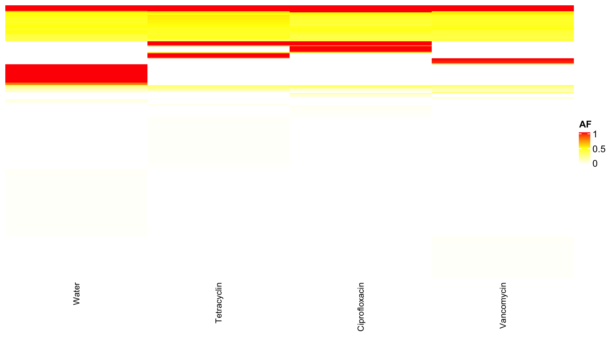
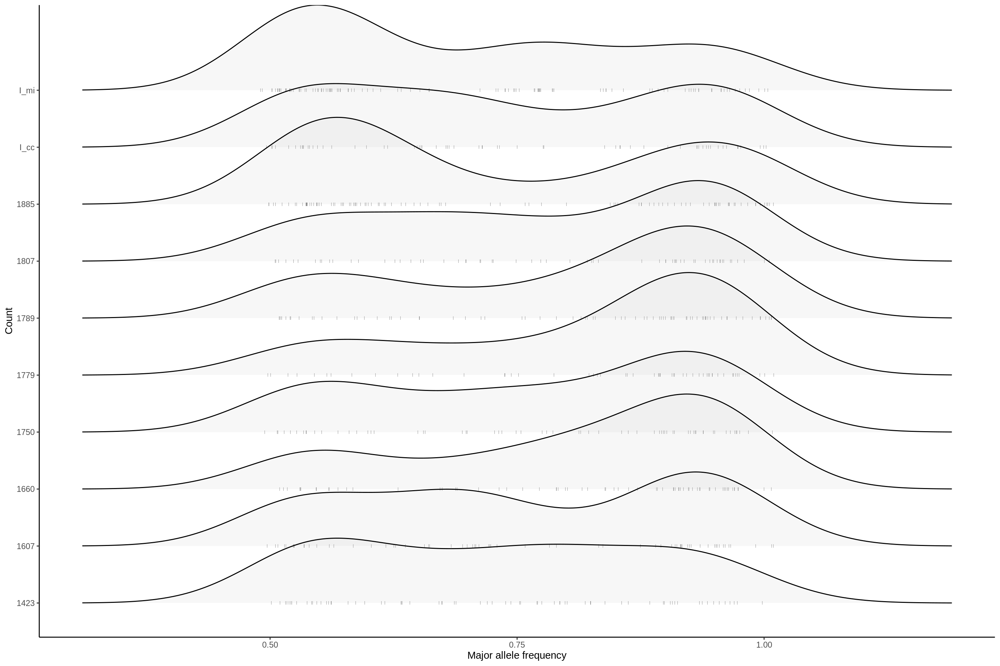
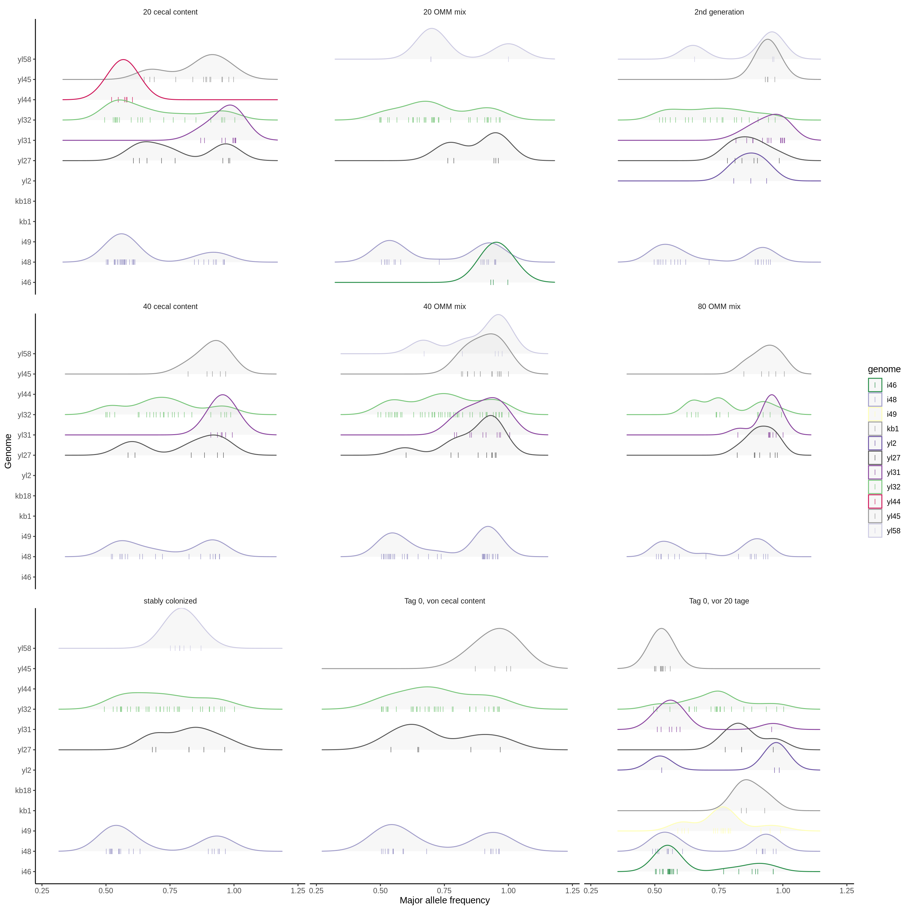
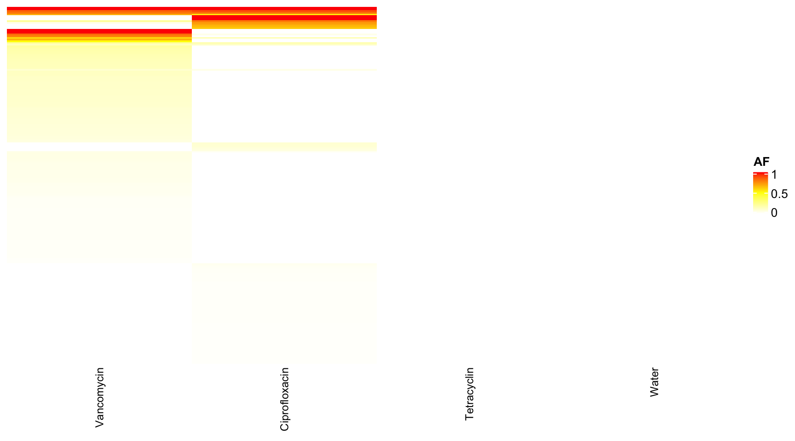

Section 5 dendogram
library(circlize)
library(ComplexHeatmap)
dat <- readRDS("data/rds/omm_ab_with_fixed.rds")
dat$rep.group <- translateMouseIdToReplicateGroup(dat$mouse.id)
dat <- dat[which(dat$rep.group == "Full"), ]
dat$sample.id <- paste0(dat$mouse.id, "-", dat$day)
dat$variant.id <- paste0(dat$genome_hr, "-", dat$fixed, "-", dat$POS,
"-", dat$REF, "-", dat$ALT)
data.wide <- dcast(dat, variant.id ~ sample.id, value.var = "AF")
data.wide[is.na(data.wide)] <- 0
rownames(data.wide) <- data.wide$variant.id
data.wide$variant.id <- NULL
heat <- data.matrix(data.wide)
# limit to variants that are present in at least 10% of samples
heat_num <- rowSums(heat != 0)
# limit to variants that have a high variance
heat2 <- heat
heat_var_num <- matrixStats::rowVars(heat2)
heat3 <- heat
dat$dummy <- 1
annot.data <- aggregate(dummy ~ mouse.id + mouse.group + day + phase,
dat, sum)
annot.data$sample.id <- paste0(annot.data$mouse.id, "-", annot.data$day)
heat3.mouse.id <- annot.data[match(colnames(heat3), annot.data$sample.id),
]$mouse.id
heat3.day <- annot.data[match(colnames(heat3), annot.data$sample.id),
]$day
heat3.mouse.group <- annot.data[match(colnames(heat3), annot.data$sample.id),
]$mouse.group
heat3.phase <- annot.data[match(colnames(heat3), annot.data$sample.id),
]$phase
heat3.phase2 <- ifelse(heat3.phase == "post-treatment", 6, NA)
ord = data.frame(day = heat3.day, mouse.id = heat3.mouse.id)
occ = as.data.frame(table(heat3.mouse.id))
ord$occ <- occ[match(ord$mouse.id, occ$heat3.mouse.id), ]$Freq
data.wide.sub <- dat[match(colnames(heat3), dat$sample.id), ]
col_fun = colorRamp2(c(0, 0.5, 1), c("white", "yellow", "red"))
qpcr <- read.table("qpcr.csv", header = T, sep = ";")
qpcr$universal <- NULL
rownames(qpcr) <- paste0(qpcr$mouse, "-", qpcr$day)
qpcr <- qpcr[, -c(1:5)]
qpcr <- apply(qpcr, 1, function(x) x/sum(x))
qpcr <- qpcr[, which(colnames(qpcr) %in% colnames(heat3))]
qpcr <- qpcr[, match(colnames(heat3), colnames(qpcr))]
bug <- sapply(strsplit(rownames(heat3), split = "-", fixed = TRUE),
`[`, 1)
fixed <- sapply(strsplit(rownames(heat3), split = "-", fixed = TRUE),
`[`, 2)
qpcr_1 <- qpcr[1, ]
qpcr_2 <- qpcr[2, ]
qpcr_3 <- qpcr[3, ]
qpcr_4 <- qpcr[4, ]
qpcr_5 <- qpcr[5, ]
qpcr_6 <- qpcr[6, ]
qpcr_7 <- qpcr[7, ]
qpcr_8 <- qpcr[8, ]
qpcr_9 <- qpcr[9, ]
qpcr_10 <- qpcr[10, ]
qpcr_11 <- qpcr[11, ]
qpcr_12 <- qpcr[12, ]
hc = hclust(dist(t(heat3)))
Heatmap(matrix(nc = ncol(heat3), nr = 0), column_order = order(ord$mouse.id,
ord$day), column_split = heat3.mouse.group, cluster_columns = FALSE,
top_annotation = HeatmapAnnotation(day = anno_simple(heat3.day,
pch = heat3.phase2), KB1 = anno_lines(log10(qpcr_1), border = T,
add_points = TRUE, pt_gp = gpar(col = 1), height = unit(0.7,
"cm"), axis = F), YL2 = anno_lines(log10(qpcr_2), border = T,
add_points = TRUE, pt_gp = gpar(col = 2), height = unit(0.7,
"cm"), axis = F), KB18 = anno_lines(log10(qpcr_3), border = T,
add_points = TRUE, pt_gp = gpar(col = 3), height = unit(1, "cm"),
axis = F), YL27 = anno_lines(log10(qpcr_4), border = T, add_points = TRUE,
pt_gp = gpar(col = 4), height = unit(1, "cm"), axis = F), YL31 = anno_lines(log10(qpcr_5),
border = T, add_points = TRUE, pt_gp = gpar(col = 5), height = unit(1,
"cm"), axis = F), YL32 = anno_lines(log10(qpcr_6), border = T,
add_points = TRUE, pt_gp = gpar(col = 6), height = unit(1, "cm"),
axis = F), YL44 = anno_lines(log10(qpcr_7), border = T, add_points = TRUE,
pt_gp = gpar(col = 7), height = unit(1, "cm"), axis = F), YL45 = anno_lines(log10(qpcr_8),
border = TRUE, add_points = TRUE, pt_gp = gpar(col = 8), height = unit(1,
"cm"), axis = F), I46 = anno_lines(log10(qpcr_9), border = TRUE,
add_points = TRUE, pt_gp = gpar(col = 9), height = unit(1, "cm"),
axis = F), I48 = anno_lines(log10(qpcr_10), border = TRUE, add_points = TRUE,
pt_gp = gpar(col = 10), height = unit(1, "cm"), axis = F), I49 = anno_lines(log10(qpcr_11),
border = TRUE, add_points = TRUE, pt_gp = gpar(col = 11), height = unit(1,
"cm"), axis = F), YL58 = anno_lines(log10(qpcr_12), border = TRUE,
add_points = TRUE, pt_gp = gpar(col = 12), height = unit(1,
"cm"), axis = F), ra = anno_barplot(t(qpcr), bar_width = 1,
gp = gpar(fill = 1:12), height = unit(1.5, "cm"), num = anno_lines(colSums(heat3),
smooth = TRUE, border = TRUE))))dat <- readRDS("data/rds/omm_ab_with_fixed.rds")
p <- ggplot(dat, aes(x = POS, y = AF, color = fixed))
p <- p + facet_grid(chr ~ ., space = "free_x") + geom_point(size = 0.1,
shape = ".")
p <- p + theme_minimal()
p
dat <- readRDS("data/rds/omm_ab_with_fixed.rds")
dat2 <- dat[which(dat$fixed == T), ]
dat2.reduced <- data.frame(chr = dat2$chr, POS = dat2$POS)
dat3 <- dat2.reduced[duplicated(dat2.reduced), ]
p <- ggplot(dat, aes(x = POS, y = AF, color = day))
p <- p + facet_wrap(chr ~ ., shrink = F, strip.position = "right", ncol = 1) +
geom_point(size = 0.1, shape = ".")
p <- p + geom_vline(data = dat3, aes(xintercept = POS), color = "red",
alpha = 0.2)
p <- p + theme_minimal() + scale_color_viridis_c()
p <- p + theme(strip.background = element_blank(), strip.text.y = element_text(angle = 0,
color = "black"), axis.title.y = element_blank(), axis.text.y = element_blank(),
axis.ticks.y = element_blank(), axis.line.y = element_blank(), panel.border = element_blank(),
panel.grid.major = element_blank(), panel.grid.minor = element_blank())
p
5.1 Humann3
dat <- read.csv2("Humann3/goup_test.tsv", sep = "\t", header = T)
dat$Water <- as.numeric(as.matrix(dat$Water))
dat$Cipro <- as.numeric(as.matrix(dat$Cipro))
dat$Tetra <- as.numeric(as.matrix(dat$Tetra))
dat$Vanco <- as.numeric(as.matrix(dat$Vanco))
dat <- dat[which(dat$Q.value < 0.01), ]
dat <- as.data.frame(dat)
dat$Q.value <- as.numeric(as.matrix(dat$Q.value))
dat$plog <- -log(dat$Q.value)
require(reshape2)
dat.m <- melt(dat, id.vars = c("Short", "Feature", "P.value", "Q.value",
"plog"))## Warning in melt(dat, id.vars = c("Short", "Feature", "P.value",
## "Q.value", : The melt generic in data.table has been passed a
## data.frame and will attempt to redirect to the relevant reshape2
## method; please note that reshape2 is deprecated, and this
## redirection is now deprecated as well. To continue using melt
## methods from reshape2 while both libraries are attached, e.g.
## melt.list, you can prepend the namespace like reshape2::melt(dat).
## In the next version, this warning will become an error.p <- ggplot(dat, aes(x = reorder(Feature, plog), y = plog))
p <- p + geom_point() + coord_flip() + theme_minimal()
p
5.2 Uniref
dat <- read.table("Humann3/merged_uniref_renorm_annotated_unstratified_mapped.csv",
sep = ";", header = T)
dat <- as.data.frame(dat)
dat$Uniref <- NULL
div <- as.data.frame(vegan::diversity(t(dat), index = "shannon"))
colnames(div) <- "UniRef90"
rownames(div) <- substring(rownames(div), 2)
div$day <- as.integer(substr(rownames(div), 6, 7))
div$mouse.id <- substr(rownames(div), 1, 4)
div$phase <- binDaysByPhase(as.numeric(as.matrix(div$day)))
div$phase_num <- binDaysByPhaseGroup(div$day)
div$mouse.group <- translateMouseIdToTreatmentGroup(div$mouse.id)
div$mouse.id2 <- paste0(div$mouse.id, "_", div$day)
# add qpcr based diversity
qpcr <- read.table("qpcr.csv", header = T, sep = ";")
qpcr$universal <- NULL
rownames(qpcr) <- paste0(qpcr$mouse, "_", qpcr$day)
qpcr <- qpcr[, -c(1:5)]
qpcr <- apply(qpcr, 1, function(x) x/sum(x))
div2 <- as.data.frame(vegan::diversity(t(qpcr), index = "shannon"))
colnames(div2) <- "qpcr_shannon"
div$qpcr <- NULL
div$qpcr <- div2[match(div$mouse.id2, rownames(div2)), ]
div.m <- reshape2::melt(div, measure.vars = c("UniRef90", "qpcr"))
p <- ggplot(div.m, aes(x = day, y = value))
p <- p + geom_point() + theme_minimal()
p <- p + facet_grid(variable ~ mouse.group, scales = "free_y")
p <- p + geom_line() + ylab("Shannon")
p